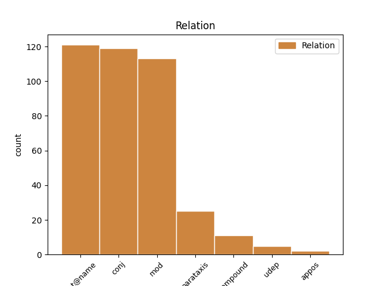
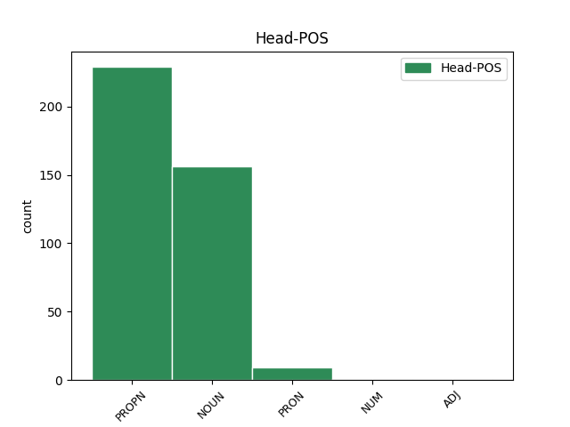
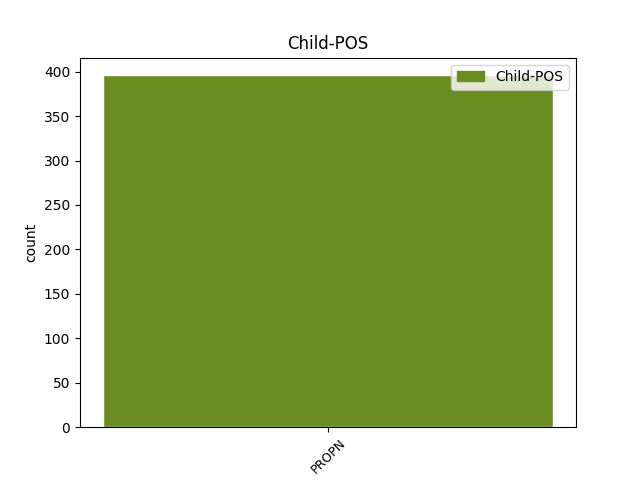

Distribution of features within this leaf



Agreement Rules sorted by frequency.
When the dependent token is None
1 Da _ _ _ _ 0 _ _ _
2 Breivik _ _ _ _ 0 _ _ _
3 helt _ _ _ _ 0 _ _ _
4 mot _ _ _ _ 0 _ _ _
5 slutten _ _ _ _ 0 _ _ _
6 av _ _ _ _ 0 _ _ _
7 fengslingsmøtet _ _ _ _ 0 _ _ _
8 på _ _ _ _ 0 _ _ _
9 nytt _ _ _ _ 0 _ _ _
10 ba _ _ _ _ 0 _ _ _
11 om _ _ _ _ 0 _ _ _
12 ordet _ _ _ _ 0 _ _ _
13 , _ _ _ _ 0 _ _ _
14 fortalte _ _ _ _ 0 _ _ _
15 han _ _ _ _ 0 _ _ _
16 at _ _ _ _ 0 _ _ _
17 han _ _ _ _ 0 _ _ _
18 skrev _ _ _ _ 0 _ _ _
19 en _ _ _ _ 0 _ _ _
20 kronikk _ _ _ _ 0 _ _ _
21 om _ _ _ _ 0 _ _ _
22 Torgeir Torgeir PROPN _ Gender=Masc 27 mod _ _
23 Huseby _ _ _ _ 0 _ _ _
24 og _ _ _ _ 0 _ _ _
25 Synne _ _ _ _ 0 _ _ _
26 Sørheims _ _ _ _ 0 _ _ _
27 sakkyndigrapport sakkyndigrapport NOUN _ Definite=Ind|Gender=Masc|Number=Sing 0 _ _ _
28 som _ _ _ _ 0 _ _ _
29 erklærer _ _ _ _ 0 _ _ _
30 ham _ _ _ _ 0 _ _ _
31 strafferettslig _ _ _ _ 0 _ _ _
32 utilregnelig _ _ _ _ 0 _ _ _
33 . _ _ _ _ 0 _ _ _
Disagree Examples:
1 De _ _ _ _ 0 _ _ _
2 ble _ _ _ _ 0 _ _ _
3 ønsket _ _ _ _ 0 _ _ _
4 velkommen _ _ _ _ 0 _ _ _
5 av _ _ _ _ 0 _ _ _
6 dronning _ _ _ _ 0 _ _ _
7 Sonja Sonja PROPN _ Gender=Fem 0 _ _ _
8 , _ _ _ _ 0 _ _ _
9 kong _ _ _ _ 0 _ _ _
10 Harald Harald PROPN _ Gender=Masc 7 conj _ _
11 , _ _ _ _ 0 _ _ _
12 kronprins _ _ _ _ 0 _ _ _
13 Haakon _ _ _ _ 0 _ _ _
14 og _ _ _ _ 0 _ _ _
15 kronprinsesse _ _ _ _ 0 _ _ _
16 Mette-Marit _ _ _ _ 0 _ _ _
17 . _ _ _ _ 0 _ _ _
1 Først _ _ _ _ 0 _ _ _
2 i _ _ _ _ 0 _ _ _
3 prosesjonen _ _ _ _ 0 _ _ _
4 gikk _ _ _ _ 0 _ _ _
5 kong _ _ _ _ 0 _ _ _
6 Harald Harald PROPN _ Gender=Masc 0 _ _ _
7 og _ _ _ _ 0 _ _ _
8 brudens _ _ _ _ 0 _ _ _
9 mor _ _ _ _ 0 _ _ _
10 , _ _ _ _ 0 _ _ _
11 Marit Marit PROPN _ Gender=Fem 6 conj _ _
12 Tjessem _ _ _ _ 0 _ _ _
13 . _ _ _ _ 0 _ _ _
1 Først _ _ _ _ 0 _ _ _
2 i _ _ _ _ 0 _ _ _
3 tredje _ _ _ _ 0 _ _ _
4 rekke _ _ _ _ 0 _ _ _
5 kom _ _ _ _ 0 _ _ _
6 svenskekongen _ _ _ _ 0 _ _ _
7 , _ _ _ _ 0 _ _ _
8 Carl Carl PROPN _ Gender=Masc 0 _ _ _
9 Gustaf _ _ _ _ 0 _ _ _
10 , _ _ _ _ 0 _ _ _
11 og _ _ _ _ 0 _ _ _
12 dronning _ _ _ _ 0 _ _ _
13 Margrethe Margrethe PROPN _ Gender=Fem 8 conj _ _
14 av _ _ _ _ 0 _ _ _
15 Danmark _ _ _ _ 0 _ _ _
16 . _ _ _ _ 0 _ _ _
1 Fra _ _ _ _ 0 _ _ _
2 den _ _ _ _ 0 _ _ _
3 norske _ _ _ _ 0 _ _ _
4 kongefamilien _ _ _ _ 0 _ _ _
5 var _ _ _ _ 0 _ _ _
6 prinsessene _ _ _ _ 0 _ _ _
7 Ragnhild _ _ _ _ 0 _ _ _
8 og _ _ _ _ 0 _ _ _
9 Astrid _ _ _ _ 0 _ _ _
10 plassert _ _ _ _ 0 _ _ _
11 ved _ _ _ _ 0 _ _ _
12 hovedbordet _ _ _ _ 0 _ _ _
13 , _ _ _ _ 0 _ _ _
14 mens _ _ _ _ 0 _ _ _
15 Espen Espen PROPN _ Gender=Masc 0 _ _ _
16 Høiby _ _ _ _ 0 _ _ _
17 og _ _ _ _ 0 _ _ _
18 Kristin Kristin PROPN _ Gender=Fem 15 conj _ _
19 Høiby _ _ _ _ 0 _ _ _
20 Bjørnøy _ _ _ _ 0 _ _ _
21 fra _ _ _ _ 0 _ _ _
22 brudens _ _ _ _ 0 _ _ _
23 familie _ _ _ _ 0 _ _ _
24 var _ _ _ _ 0 _ _ _
25 blant _ _ _ _ 0 _ _ _
26 de _ _ _ _ 0 _ _ _
27 27 _ _ _ _ 0 _ _ _
28 utvalgte _ _ _ _ 0 _ _ _
29 . _ _ _ _ 0 _ _ _
1 I _ _ _ _ 0 _ _ _
2 går _ _ _ _ 0 _ _ _
3 kveld _ _ _ _ 0 _ _ _
4 møtte _ _ _ _ 0 _ _ _
5 statsministerkandidat _ _ _ _ 0 _ _ _
6 Kjell _ _ _ _ 0 _ _ _
7 Magne _ _ _ _ 0 _ _ _
8 Bondevik _ _ _ _ 0 _ _ _
9 opp _ _ _ _ 0 _ _ _
10 på _ _ _ _ 0 _ _ _
11 Fr.p.-formann _ _ _ _ 0 _ _ _
12 Carl Carl PROPN _ Gender=Masc 15 mod _ _
13 I. _ _ _ _ 0 _ _ _
14 Hagens _ _ _ _ 0 _ _ _
15 kontor kontor NOUN _ Definite=Ind|Gender=Neut|Number=Sing 0 _ _ _
16 , _ _ _ _ 0 _ _ _
17 vegg _ _ _ _ 0 _ _ _
18 i _ _ _ _ 0 _ _ _
19 vegg _ _ _ _ 0 _ _ _
20 med _ _ _ _ 0 _ _ _
21 hans _ _ _ _ 0 _ _ _
22 eget _ _ _ _ 0 _ _ _
23 . _ _ _ _ 0 _ _ _